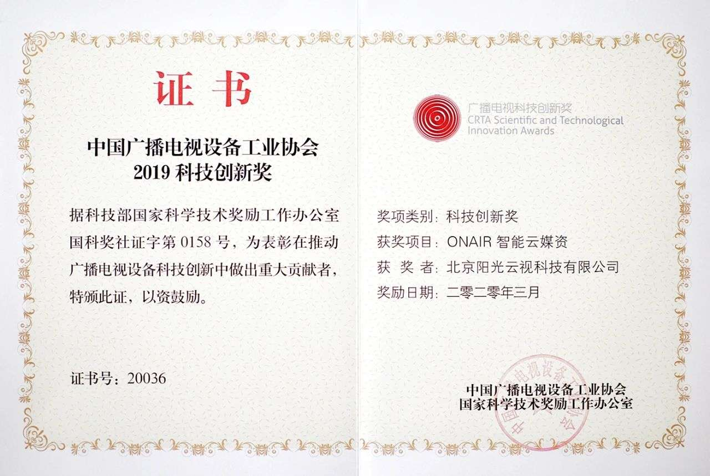
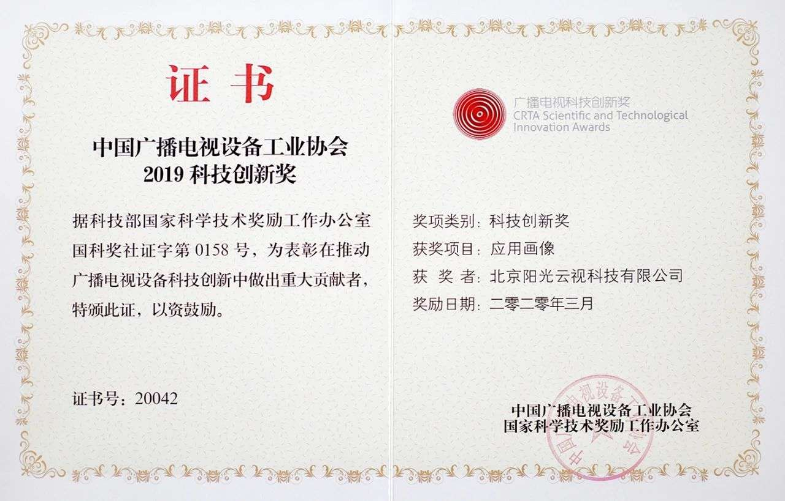
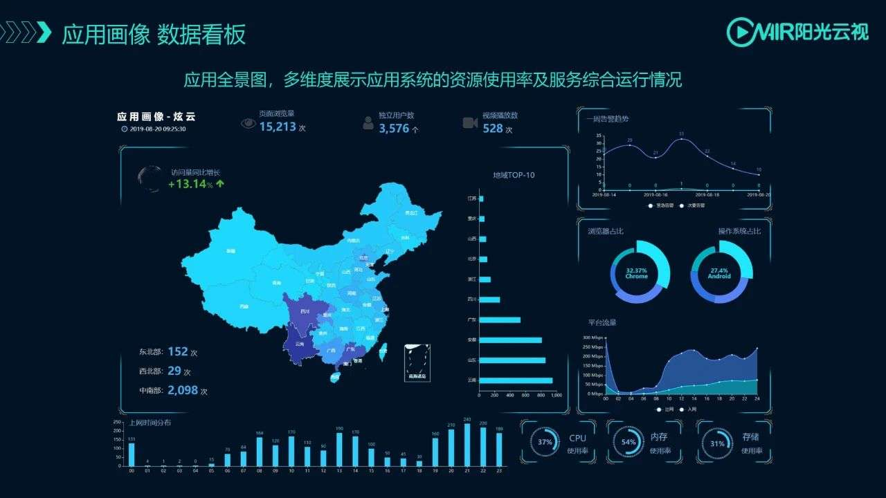
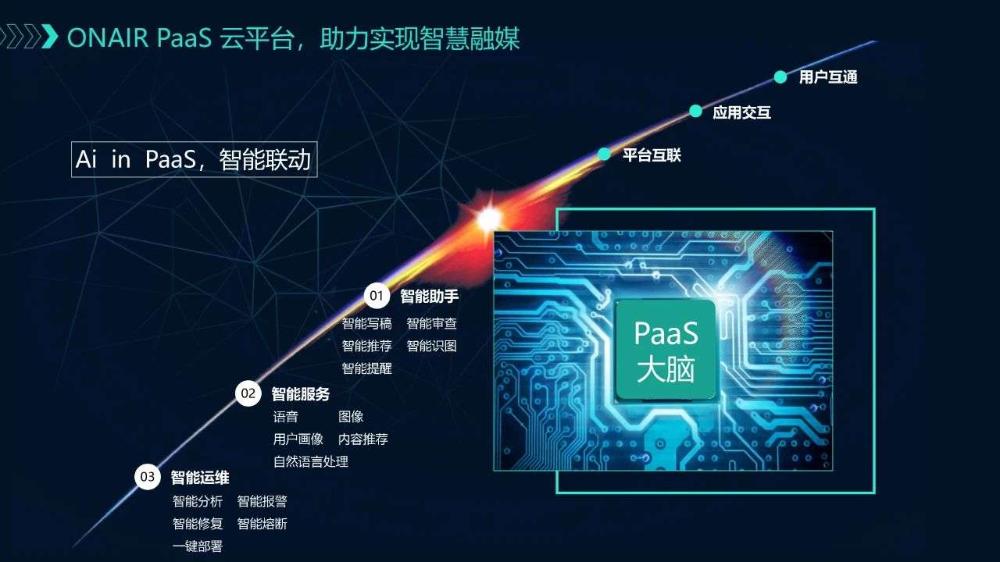
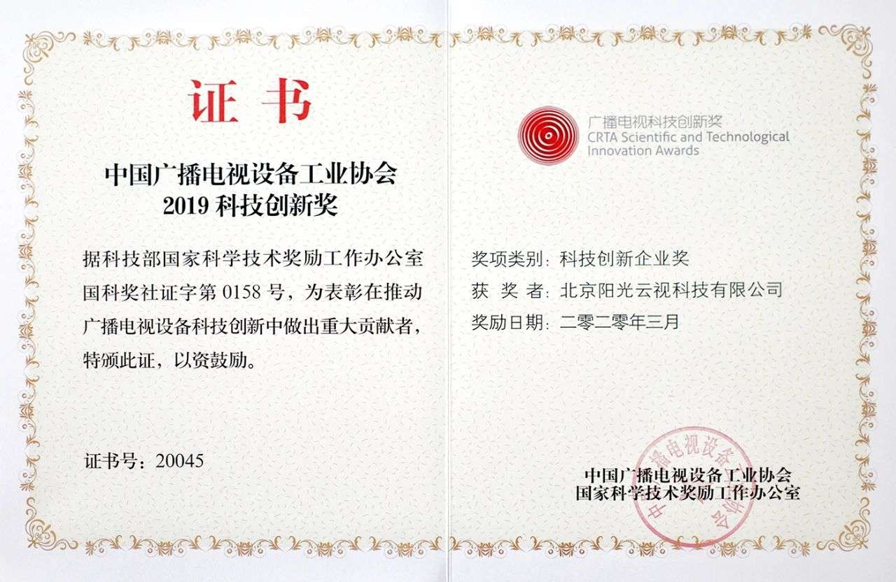

喜获三连|阳光云视智能云媒资、应用画像荣获广播电视科技创新产品、企业三大奖项
日前，北京阳光云视科技有限公司在2019年度中国广播电视科技创新奖评选中，依靠科技创新能力与领先的行业创新理念，经由专家评委评选，一举获得2项科技创新奖，1项科技创新企业奖。
科技创新奖：智能云媒资

近些年，多媒体技术已经在各个领域的应用中得到了普及。同时随着互联网、云计算、大数据、人工智能等技术的快速发展，如何利用新兴技术帮助媒体机构提高工作效率，节省运营的人力、物力成本，以及如何利用新兴技术将媒体资产的价值发挥到最大，目前已经成为媒体机构紧迫要解决的问题。媒体资产数字化、信息化、网络化、智能化是多媒体资料管理发展的必然趋势。
在上述大背景下，阳光云视智能云媒资产品应用而生，秉着“以用户为中心”的设计理念，云视智能云媒资产品采用先进的云计算、大数据、人工智能等技术，通过规范的存储格式，智能的审核、编目技术，灵活自定义的编目模板、强大的搜索引擎技术以及云计算的高效计算能力，实现了对媒体资料的集中管理和高效利用。
七大创新优势：
-利用云端资源，资产价值最大化
-原有资产的异地备份
-媒体资源标签化、智能化
-智能辅助用户进行编目，有效节省人工成本
-图像/标签检索媒资库，有效提高检索效率
-云上存储，高性价比，有效控制成本支出
-云上数据多重安全保障，为媒体资产保驾护航
传统的媒资系统在进行产品设计时，将媒体文件定义为多个层级，通过人工打入、出点的方式，对各个子片段进行编目信息描述，此方式增加了人工成本，同时工作效率也异常低下。阳光云视智能云媒资系统结合人工智能技术，通过对内容智能打标引的方式，大大提高了工作效率，节约了人工成本。同时结合大数据技术，通过标签对内容进行自动分类，在检索内容时对相关内容进行智能推荐，提高了检索效率。
ONAIR智能云媒体资产管理系统可以为媒体机构提供一个信息平台，将资产由模拟化转换为数字化，同时也是未来数字化广电运营的核心。它为各种应用系统提供了资源支持，使得应用系统有丰富的资源可以利用，保证了应用系统的效能得到充分的发挥。

科技创新奖：应用画像
阳光云视ONAIR PaaS平台从行业首家提出业务上云理念开始，就持续秉持创新思维，不断突破新技术，此次获奖的PaaS平台应用画像数据产品，基于安全、高效、开放、扩展的原则，统计应用系统的行为数据，再结合AI算法，进行多种维度的数据分析，提供排行类、分布类、趋势类数据看板，更加直观立体的展示应用系统的相关运行情况，为业务生产、资源利用、产品规划、领导决策提供了更加完善的数据支撑。同时提供了RESTful API，简单易用，可快速根据业务场景进行能力集成。

随着数据时代的到来及人工智能的快速发展，各行各业都会发生变革性的改变。那些海量日志数据，隐藏着巨大的有价值的信息。大量的日志采集、数据分析工作都可以交给大数据服务和人工智能来完成，从而节省下来的人力物力则可以去完成那些更具有创造性的、富有想象力的工作，为客户带来更大的价值。


科技创新企业奖：阳光云视
除了上述两项产品获奖，北京阳光云视科技有限公司也荣获了创新企业奖，在公司发展历程中，我们面向行业提出了符合当今媒体格局的“移动+运营”理念，在省级平台建设中，从“策-采-编-审-发”的专业生产工具入手，以ONAIR PAAS平台的云计算能力、大数据服务能力、AI能力为支撑，松耦合、弹性扩展保证省级平台向市、县各级灵活部署，在此基础上，新增加的考评、直播、智能助手等辅助工具，分发、VLOG等运营工具，完美助力省级媒体建设可运营的智慧融媒体平台，目前阳光云视已为中央广播电视总台、中国新闻社、解放军报社、云南广播电视台、江苏省广播电视总台、北京广播电视台、重庆广播电视集团等16个省级媒体机构提供服务。
2019年初，受中共中央宣传部委托，国家广播电视总局组织编制并审查了《县级融媒体中心省级技术平台规范要求》，1月15日批准为中华人民共和国广播电视推进性行业标准，予以发布，阳光云视全程参与了规范的制定，并针对县级融媒体中心提供模块化设计的县级融媒体平台解决方案，可以根据用户需求自由选择建设的模块和建设的方式，并与上级融媒体平台无缝衔接；以敏捷的姿态为县级用户提供专业的内容生产和运营的能力，目前，阳光云视已经为全国各市、县级媒体机构合作建设县级融媒体平台近百个。
远见者，赢未来，公司一直秉持创新的经营理念，致力为行业客户提供更好地服务，获奖是鼓励，也是鞭策，我们将再接再厉，与客户一起共创辉煌。